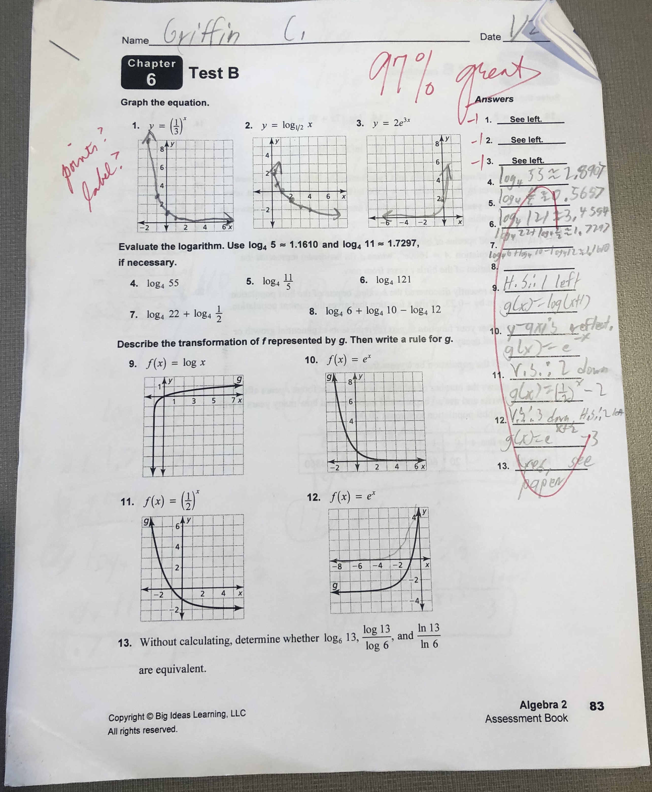

My notes, homework, and test represent my stretch. My lack of organization sometmes causes me to make careless errors, like on my test, where I forgot to label the points on my graphs. My notebook and homework are pretty messy, mainly because my binders and locker are not organized. I can fix this by concentrating, and by not making careless errors.

My Math Test Home Page